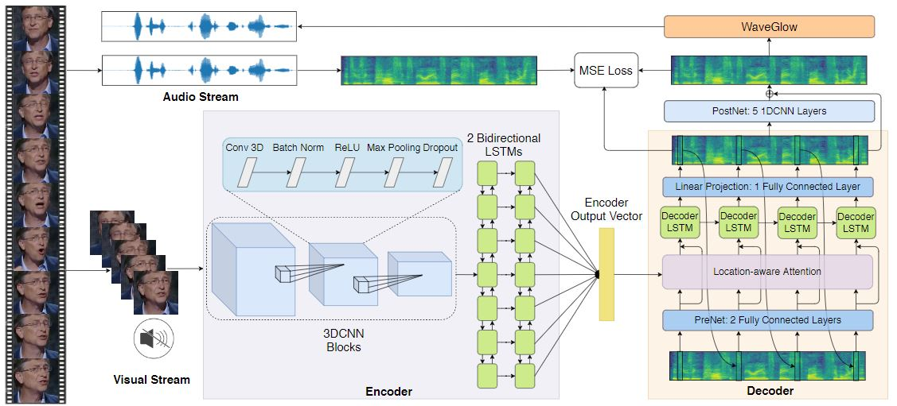

SUBMITTED TO IEEE TRANSACTION ON NEURAL NETWORKS AND LEARNING SYSTEMS
LipSound2: Self-Supervised Pre-Training
for Lip-to-Speech Reconstruction and Lip Reading
| Leyuan Qu✝ | Cornelius Weber | Stefan Wermter |
| Knowledge Technology Group (WTM) | Department of Informatics, University of Hamburg |
|---|
Abstract
The aim of this work is to investigate the impact of crossmodal self-supervised pre-training for speech reconstruction (video-to-audio) by leveraging the natural co-occurrence of audio and visual streams in videos. We propose LipSound2 which consists of an encoder-decoder architecture and location-aware attention mechanism to learn to map face image sequences to mel-scale spectrograms directly without requiring any human annotations. The proposed LipSound2 model is firstly pre-trained on ~2400h multi-lingual (e.g. English and German) audio-visual data (VoxCeleb2). To verify the generalizability of the proposed method, we then fine-tune the pre-trained model on specific-domain datasets (GRID, TCD-TIMIT) for English speech reconstruction and achieve significant improvement on speech quality and intelligibility than previous works in speaker-dependent and -independent settings. In addition to English, we conduct Chinese speech reconstruction on the CMLR dataset to verify the impact on transferability. Lastly, we perform the cascaded lip reading (video-to-text) system by fine-tuning the generated audios on a pre-trained speech recognition system and achieve state-of-the-art performance on both English and Chinese benchmark datasets.
Pipeline
Architecture
Demo Video
Acknowledgment
|
The authors gratefully acknowledge the partial support from the China Scholarship Council (CSC), the German Research Foundation DFG under project CML (TRR 169), and the European Union under project SECURE (No 642667).
|